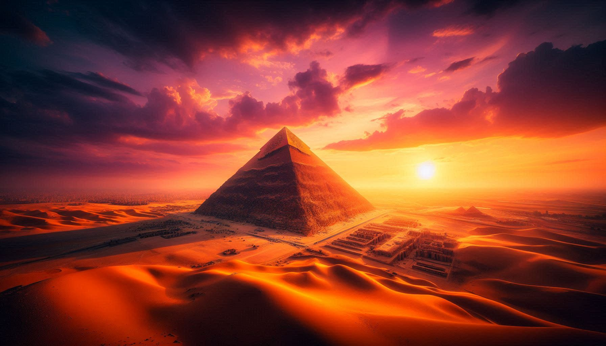
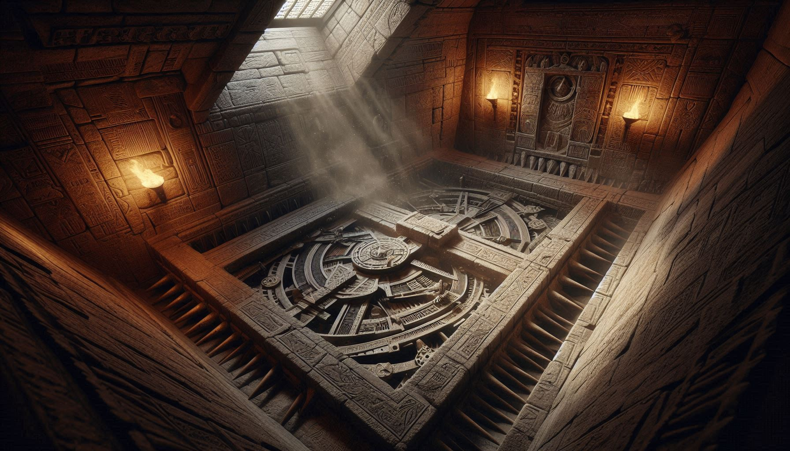

ANCIENT TOMBS OR POWER PLANTS?

Egypt-ile Great Pyramid of Giza-ye kurichu aalochikkumpol engineering-ile pala rules-um fail aakum. Athra perfection-il aanu ithu build cheythittullath.
| FEATURE | DATA |
|---|---|
| Stone Count | Around 2.3 Million blocks. |
| Weight | 2.5 to 80 tons per block. |
| Alignment | True North-inu thulyam (0.05 degree error mathram). |
| Math | Pyramid-inte dimensions-il Pi (π) and Golden Ratio (φ) hidden aanu. |
1980-il Robert Bauval oru theory purathu vittu. Giza-iyile 3 main pyramids-um sky-ile Orion's Belt-ile 3 stars-ine thulyamayi align cheythittundu. Ithu verum oru coincidence aano? Ancient Egyptians-inu ithra accurate aaya astronomical knowledge engane kitti?

Chila modern researchers (Christopher Dunn) parayunnath Pyramids verum tombs alla, athoru Energy Generator aayirunnu ennanu:
👉 Quartz & Granite: Pyramid-inte ullile King's Chamber granite kondaanu undakkiyittullath. Granite-il ulla Quartz-inu Piezoelectric property und (vibration vazhi electricity undakkam).
👉 No Soot: Pyramids-inte ullile walls-il theepanthangal (torches) upayogicha karuppu niram (soot) illa. Athayath avar 'electricity' pole entho light source upayogichirunnu ennu chilar karuthunnu.
Pyramids-inu aduthulla **Great Sphinx**-il vellathil ninnulla erosion (vada) kaanam. Ithinte artham Egypt oru 'desert' aakunnathinu munne, athayath 10,000+ years munne ithu build cheythathaavam. Ithu Anunnaki-yo atho vere ethokke lost advanced civilizations aano build cheythath ennu pala discussion-um nadakkunnu.
Archaeological evidence parayunnath slaves alla ithu build cheythath ennanu. Well-fed aayi ulla Skilled Workers aayirunnu ivide undayirunnath. Avarude settlement-ukalum food traces-um pyramids-inu aduthu ninnu kittiyittundu.
Pyramids verum kallukal alla… Ithu nammude pashchathalathile hidden history-ude oru sign aanu. Nammude ancestors nammal karuthunnathinekkal Technologically Advanced aayirunnu ennu mathramaanu ithu kaattunnath.